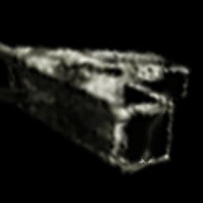
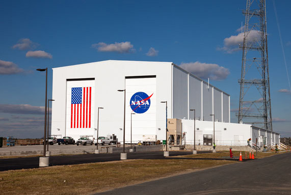
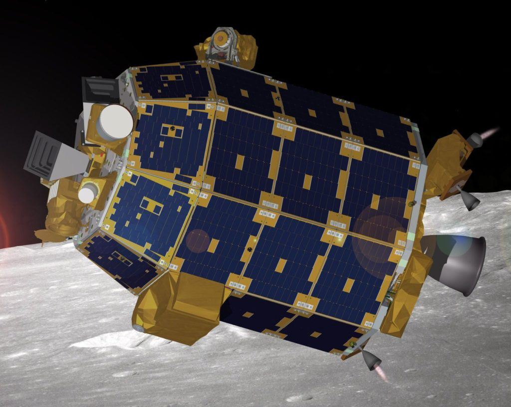
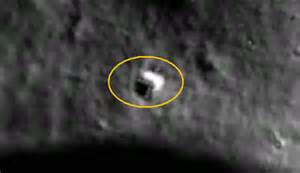
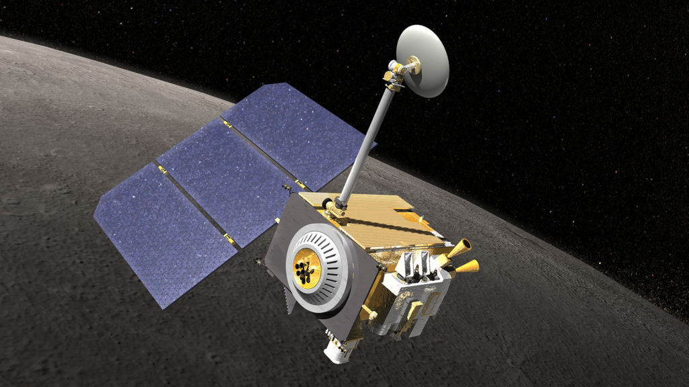
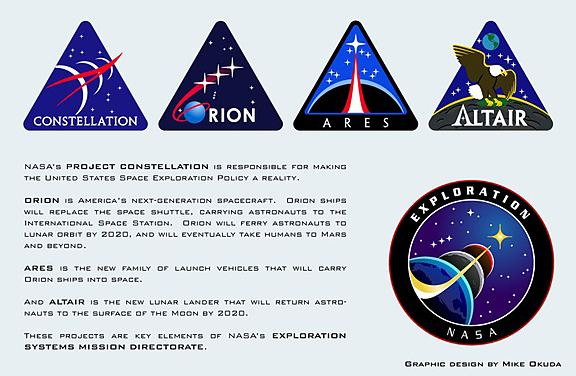
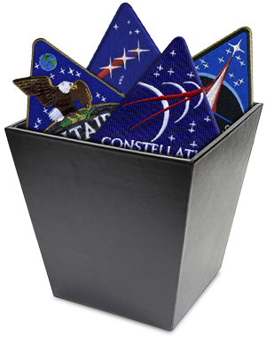
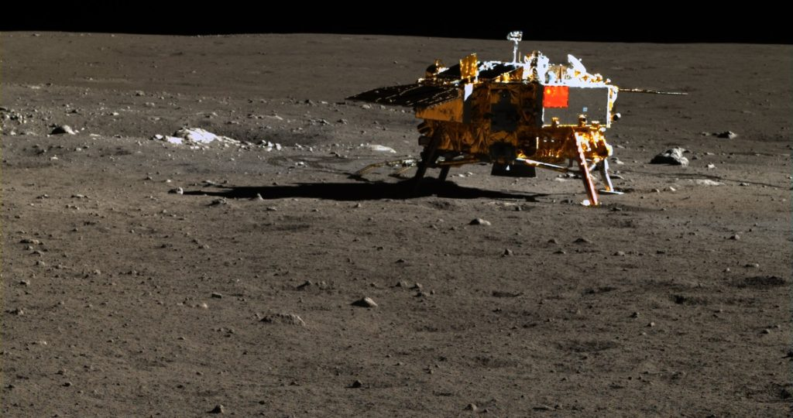
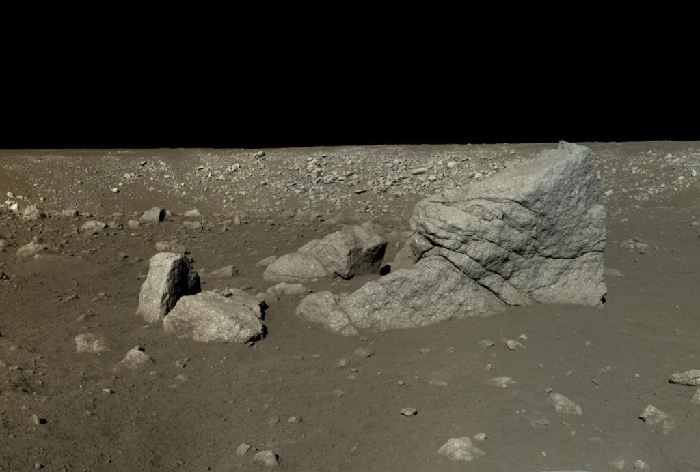
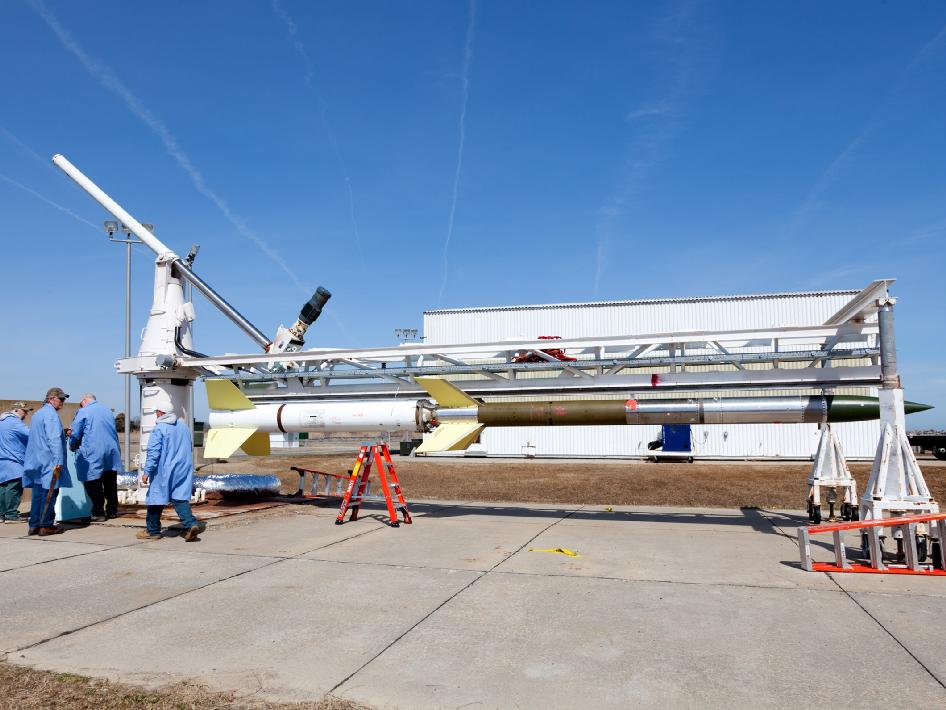

The reader should realize that from time to time extraterrestrial spacecraft and assembled structures are observed by earth bound investigators. Many are sighted by NASA and quickly suppressed, but others are discovered by other agencies and individuals that are beyond the reach of the American Government.
Let’s talk about one such observation…
Introduction
NASA’s Meteoroid Environment Office (MEO) who confirms that for almost two years the U.S. government used the McDonald Observatory in Texas to track the approach of two of these enormous objects.
In 2013 two enormous “boxes”, L-shaped, that consisted of elaborate scaffolding enclosed structures were seen and photographed as the entered our solar system from deep space. Each one was the size of a small town. They were observed on approach when entering the system. Then to everyone’s surprise; they decelerated. They changed their course trajectory, and entered onto a landing approach to the moon. As they neared the moon, the decelerated yet again and conducted a careful landing sequence.

All of this was observed by more than just a few people and the Internet was flooded by the buzz concerning this object. (Of course, it never made it to the main stream press.) Those involved in watching this event included not only amateurs, but the ESA, and NASA. The Internet and networks were flooded with excitement, and it was impossible for NASA or the NSA to do anything about it.
The two objects approached the moon in a strict landing pattern. Decelerated in an understandable and logical manner, and then landed carefully and gingerly. In mid-January 2014 the objects landed.
Upon landing, they immediately began an elaborate (and quick) assembly process. This event was tracked by NASA, the NSA, and a number of Earth-bound UFO enthusiasts who alerted the local UFO community of the event.
Emergency Investigations
VISUALLY CONFIRMED: Enormous Craft Detected on Moon by apollosolaris Monday, 20 January 2014 11:58 January 18, 2014 — (TRN LINK ) — At least one enormous object of unknown origin has been visually verified as having landed on our moon. As a result, on Wednesday, January 15, three Terrier-Orion rockets blasted off within a span of 20 seconds from NASA’s Wallops Flight Facility between 1 a.m. and 5 a.m. EST (0600 to 1000 GMT) on hush-hush missions for the Department of Defense (DoD).

TRN has obtained photos of the unknown spacecraft and has an audio interview with an outside consultant from NASA’s Meteoroid Environment Office (MEO) who confirms that for almost two years the U.S. government used the McDonald Observatory in Texas to track the approach of two of these enormous objects. A year ago, in January 2013, the objects had gotten to 200,000 miles past Mars when they suddenly vanished. Realizing these two craft were approaching earth and might not be visible to NASA’s Lunar Reconnaissance Orbiter Camera (LROC) depending upon where they went, the Government reactivated the previously cancelled Lunar Atmosphere and Dust Environment Explorer (LADEE) to be launched to the moon on September 6, 2013. It took almost 100 days for LADEE to be placed into proper lunar orbit because NASA utilized gravity instead of rocket fuel to achieve this. By December, 2013, both the LADEE and the LROC found at least one of the two enormous objects had landed on the moon, in a crater the size of the City of Chicago.
LADEE
The sudden reactivation of LADEE was pretty stunning, as how the spacecraft was destroyed. Very curious stuff this. From Wikipedia…
The Lunar Atmosphere and Dust Environment Explorer (LADEE /ˈlædi/) was a NASA lunar exploration and technology demonstration mission. It was launched on a Minotaur V rocket from the Mid-Atlantic Regional Spaceport on September 7, 2013. During its seven-month mission, LADEE orbited around the Moon's equator, using its instruments to study the lunar exosphere and dust in the Moon's vicinity. Instruments included a dust detector, neutral mass spectrometer, and ultraviolet-visible spectrometer, as well as a technology demonstration consisting of a laser communications terminal.

The mission ended on April 18, 2014, when the spacecraft's controllers intentionally crashed LADEE into the far side of the Moon, which, later, was determined to be near the eastern rim of Sundman V crater.
Reactions
The reaction was as you would expect. There was a mix of disbelief, suggestions of fraud, and a quiet suppression of the event by burying its importance by other (more spectacular) news.
Flight Trajectory and Landing
I followed this event with great interest. As they approached the moon, the objects [1] decelerated and [2] entered what first appeared to be an elliptical orbit, but that was ultimately [3] changed through a course correction which involved a [4] deceleration routine. This was followed by a [5] sharp transition into a parabolic path that resulted in a [6] soft landing or low-velocity impact on the Moon’s surface.
Their landing was visually observed to occur on Monday, 20 January 2014 at 11:58 by both the Meteoroid Environment Office (MEO) and the NSA.
The landing was on the near side of the moon near the terminator. Ground based photos were taken of it. It appeared to be a well-lighted construction. On it was a geometric array of lights that easily indicated how the structures were formed together. It can be found on the Google Moon viewer at coordinates 22042’38.46N and 142034’44.52E.
22042’38.46N and 142034’44.52E
The overall construction of this device and its transport are central to my contention that the species that we associate with have this level of technology. They can fabricate huge structures. They can move them great distances. They can relocate these structures into gravity wells with great care and precision, and they can assemble them quickly and professionally at will.

This event, while now being derided as anything but an extraterrestrially fabricated structure, is actually a real and valid movement of a large scale habitation. These events do occur from time to time, and I am heartened that this time it was noticed and recorded.
In this case, I have no other information than what was posted on the Internet. But what I can add to this event is my understanding that this is a more or less valid sighting. The structure was fabricated and relocated to “our” moon for whatever unknown purpose. As an aside, I do not know what species was involved in this effort, nor do I know what purpose it is intended for or why. I also do not know which species is responsible for this structure.
Announcement
| Monday, 20 January 2014 11:58 |
| January 18, 2014 — (TRN http://www.TurnerRadioNetwork.com ) — At least one enormous object of unknown origin has been visually verified as having landed on our moon. As a result, on Wednesday, January 15, three Terrier-Orion rockets blasted off within a span of 20 seconds from NASA’s Wallops Flight Facility between 1 a.m. and 5 a.m. EST (0600 to 1000 GMT) on hush-hush missions for the Department of Defense (DoD).
TRN has obtained photos of the unknown spacecraft and has an audio interview with an outside consultant from NASA’s Meteoroid Environment Office (MEO) who confirms that for almost two years the U.S. government used the McDonald Observatory in Texas to track the approach of two of these enormous objects. A year ago, in January 2013, the objects had gotten to 200,000 miles past Mars when they suddenly vanished. Realizing these two craft were approaching earth and might not be visible to NASA’s Lunar Reconnaissance Orbiter Camera (LROC) depending upon where they went, the Government reactivated the previously cancelled Lunar Atmosphere and Dust Environment Explorer (LADEE) to be launched to the moon on September 6, 2013. It took almost 100 days for LADEE to be placed into proper lunar orbit because NASA utilized gravity instead of rocket fuel to achieve this. By December, 2013, both the LADEE and the LROC found at least one of the two enormous objects had landed on the moon, in a crater the size of the City of Chicago. All of this was kept secret until, quite by accident, the LROC images (which are generally made public) were uploaded to the publicly available GoogleMoon service, where intrepid users came upon the enormous object. Now, the whole world can see this “object” on the moon — the secret is out. |
Dr. “Norton” and his Narrative
“Dr. Eric Norton” (not his real name) has worked as a consultant for the National Security Agency (NSA) and NASA for about 12 years. He has worked on many projects for the government, most recently with the Meteoroid Environment Office (MEO) which is involved in several research projects with the underlying goal of gaining a better understanding of the meteoroid environment so that the MEO models can be improved. They basically monitor the skies, track meteors and other objects in space.
On January 22, 2012 “Dr. Norton” was called to travel immediately from his east coast home to the McDonald Observatory in Texas, which is one of the largest optical telescopes in the entire U.S.. He was booked on a flight out the same night and was met at the destination airport by an Agent from Homeland Security who whisked him to the Observatory on a matter of national security.
Upon arrival, Norton says he met with other colleagues who said they needed his help to identify something which had been detected in space, and showed him images taken from the telescope over a period of months.
“What I saw was an array of massive, three-dimensional, black structures in space, in straight-line formation, advancing in direction of planet earth.” Norton said he knew this because he was also shown images taken three months prior, which depicted the very obvious course of direction of these things which, he said “had moved millions upon millions of miles closer within just 3 months.”
The speed at which the objects were moving was utterly incredible.
Dr. Norton said he was brought in with the understanding that his job was to aid in gauging exactly what type of composition these objects were made-up of. Were they man-made, natural or unnatural to anything seen before it?
Using the scientific instruments provided by NASA, Norton and his team were able to discern the fact these were not naturally-occurring materials. They were, to their best – but limited- understanding, some sort of metallic, carbon-reinforced material, several thousand times the structural hardness of what we have today; be it naturally-occurring diamonds or carbon nano-tube technology.
As the objects got closer, Norton and his team could see through their telescopes the structural features of these things in high detail.
“They were shaped in the best way I can describe, as a three-dimensional L-shaped craft” -Dr. Norton.
He said he used the term “craft” loosely because he doesn’t know if they are piloted or vehicles at all in the strictest sense. “All we knew is they were moving and moving fast” he said.
By January, 2013, the objects had been tracked to about 200,000 miles past the planet Mars. At that point, almost instantaneously, the objects vanished from the telescope lenses. “It was almost like they flipped a switch; we couldn’t see them on any form of radar we have or any visual medium” he continued.
From February through April, 2013, Norton and his team scoured the skies looking for the objects to no avail. Norton was sent home and told to be ready on a moment’s notice to continue his work if needed. For almost 6 months, he heard nothing.
That changed in October, 2013 just before the US Government budget shutdown, when Norton telephoned a colleague and found out the enormous objects had suddenly re-appeared at our moon and had taken-up positions behind — or on — the moon.
According to Norton’s colleague, all hell was breaking loose in government to try to determine what these things were, where they were from, and what they were doing. There were all questions, but absolutely zero answers.
So, MAJestic started to task out resources towards investigatory avenues. The first thing that they looked at was a new, state of the art, observatory platform in orbit around the moon; the Lunar Reconnaissance Orbiter (LRO).
LROC
The Lunar Reconnaissance Orbiter (LRO) is a NASA robotic spacecraft currently orbiting the Moon in an eccentric polar mapping orbit. Data collected by LRO has been described as essential for planning NASA's future human and robotic missions to the Moon. Its detailed mapping program is identifying safe landing sites, locating potential resources on the Moon, characterizing the radiation environment, and demonstrating new technologies.

Launched on June 18, 2009, in conjunction with the Lunar Crater Observation and Sensing Satellite (LCROSS), as the vanguard of NASA's Lunar Precursor Robotic Program, LRO was the first United States mission to the Moon in over ten years. LRO and LCROSS were launched as part of the United States's Vision for Space Exploration program. -Wikipedia
For over 1600 days NASA has been operating the Lunar Reconnaissance Orbital Camera (LROC) to take high-definition images of the moon surface. Despite being active for over 1600 days, LROC has only imaged about twenty percent (20%) of the moon’s surface. NASA was unable to re-task the LROC to go on a wild goose chase for objects that may or may not be near the moon, NASA had to come up with a way to compliment LROC but do so in a fast and inexpensive manner. The solution: LADEE.
LADEE
In 2008, NASA proposed the Lunar Atmosphere and Dust Environment Explorer (LADEE) as a robotic mission that would orbit the moon to gather detailed information about the lunar atmosphere, conditions near the surface and environmental influences on lunar dust. At that time, there was a controversy about whether or not there was any water on the moon. This project was intended to help resolve that issue.
LADEE was to be a NASA lunar exploration mission led by Ames Research Center in collaboration with Goddard Space Flight Center.
In 2010, the Obama administration cancelled the LADEE program because of a redirection in the purpose of NASA.
- Barack Obama: NASA must try to make Muslims “feel good”
- Nasa Moon Shot Scrapped
- Does the ‘S’ In NASA Suddenly Stand for ‘Stupid’?
- President Obama aborts all Manned Space Exploration
- Rush Limbaugh says Barack Obama turned NASA into a ‘Muslim outreach department’
- NASA Chief Bolden’s Muslim Remark to Al-Jazeera Causes Stir
- Hijacked! How Obama and the Left Killed NASA
To best understand the politics of NASA at this time, and how terribly unequipped the NSA and NASA was to handle this discovery, you need to know a few things…
Here’s how it went down: In early 2010, Obama cancelled the Constellation program (already a reported $10 billion and seven years in progress) and its Ares I and Ares V rockets, the Orion spacecraft, the Altair lunar lander, and even America’s plans to return to the Moon and go on to Mars.

With that, American space exploration was dead, and it may remain so for a decade or longer. To create the appearance that America still has a space program, a project was invented to spend the next 10 to 15 years planning one single mission to a fragment of an asteroid. A bipartisan majority in Congress united against Obama’s destruction—partially. While Congress didn’t have the courage to force NASA to restore the plans and hardware required to return to the Moon, lawmakers did save the two most critical elements of the program, the Orion spacecraft and the Ares V rocket, and approved funding for commercial crew launches. The Ares V Moon-Mars rocket was renamed the “Space Launch System” (SLS) and was somewhat improved. Congress’s apparent goal was to proceed with the core elements of the program to allow the next president to restore NASA’s mission of space exploration.

While this was happening, NASA Administrator Charles Bolden, a former astronaut, U.S. Marine Corps flag officer, and test pilot, was making diversionary excuses for the cancellation of manned space exploration and carrying out President Obama’s orders. In July 2010, Bolden explained to Al-Jazeera:
When I became the NASA administrator, [President Obama] charged me with three things.
One, he wanted me to help re-inspire children to want to get into science and math;
He wanted me to expand our international relationships;
And third, and perhaps foremost, he wanted me to find a way to reach out to the Muslim world and engage much more with dominantly Muslim nations to help them feel good about their historic contribution to science, math and engineering.
Michael Griffin, who ran NASA in President George W. Bush’s second term, described the Muslim outreach initiative as a “perversion” of the agency’s mission: “NASA was chartered by the 1958 Space Act to develop the arts and sciences of flight in the atmosphere and in space and to go where those technologies will allow us to go,” Griffin said. “That’s what NASA does for the country. It is a perversion of NASA’s purpose to conduct activities in order to make the Muslim world feel good about its contributions to science and mathematics” (Truth Revolt, Feb. 20, 2015). Nowhere on Bolden’s list was advancing NASA’s mission of space exploration and remaining the world leader in technological innovation. -CRC
However, in 2012, when the objects for this story were detected, the LADEE program was suddenly resurrected. NASA knew it would take over a year just to build LADEE and a rush order was placed to NASA’s AMES Research Center to build the LADEE probe.
The probe was launched on September 6, 2013 via a Minotaur V rocket, formerly designed as an intercontinental ballistic missile for delivering nuclear warheads. To reduce fuel costs, the mission was designed to require 30 days to travel to the moon achieving arrival through the use of earth and moon gravity instead of fuel. After arriving, LADEE underwent “check-out” for 30 days before beginning another 100 days for science operations. LADEE arrived at the moon around October 6 and finished check-out around November 6.
In December, 2013 LADEE’s Ultraviolet and Visible Light Spectrometer (UVS), which determines the composition of the lunar atmosphere by analyzing light signatures of materials it finds, detected something very large and very different from anything “lunar.” The object was located in a crater which is about the size of downtown Chicago. It was L-shaped, like a wedge, gave off no radio signals but did appear to have seven areas where light of some type was either being emitted or being reflected.
Thanks to LADEE having found the object, NASA knew where to look and sent the LROC to grab high-resolution images. Those images are classified, but low-resolution images from LROC made it out to the public via routine LROC publication.
They ended-up as part of GoogleMoon where intrepid users found the object. Here now, the low-resolution images of an enormous object, which was tracked by the U.S. Government for millions of miles before it soft-landed on our moon.
嫦娥三号 3 Moon Lander Deployed

In 2012, the U.S. confidentially shared information about the inbound “objects” with other governments. Shortly thereafter to the surprise of many, China announced it intended to land on the moon and launched its Chang e-3 in December.
That launch took place and China became only the third nation to make a successful soft-landing on the moon with its Chang e-3 lunar lander. Upon landing, the Chang e-3 deployed a rover called YUTU. The U.S. has been in contact with China to see if it is possible to have its Chang ‘e-3 moon lander or its “YUTU” rover travel this far to obtain more information. No word if China will assist.

DOD Mission
The enormous objects have shown no sign whatsoever of hostile intent, but whatever is going on up there seems to have the U.S. Government concerned.
On January 10, NASA’s Wallops Space Facility in Virginia made a sudden announcement, with only three days advance notice to the public, saying that three (3x) rockets would be launched from Wallops between January 13 and 15, between 1:00 AM and 5;00 AM all on a classified Department of Defense Mission.
The short notice was unusual; the Wallops Space Center usually provides more than a month advance notice. In fact, on January 15 three Terrier-Orion missiles were launched from Wallops within 20 seconds of each other. Their cargo was not revealed to the public and the mission is classified.

The Terrier-Orion is a small rocket that is not able to reach the moon.
It can only carry a small payload about 120 miles into space. So whatever the Department of Defense launched must have been small enough to fit on that rocket, yet powerful enough to assist in the study of this event. This sounds to me like they have created a telescope by networking three smaller telescopes, like the “The Swarm Telescope Concept“.
Pretty interesting stuff, I’d say.
Quick Links
- The audio interview with “Dr. Eric Norton” can be heard HERE
- The coordinates to be used in GoogleMoon Viewer to see the images above are: 22°42’38.46″N, 142°34’44.52″E.
Mainstream Media Coverage
The mass-media has begun covering this story. Outlets such as the London Daily Mail, New York Daily News and The Hindustan Times of India have versions of this story, but none of them has the initial, long-range-telescopic image of the craft that TRN has, nor do any of them have the audio interview with “Dr. Norton” whose name was changed to protect his identity.
Links
Of course many people out in Internet-land are unaware of the back story behind this object on the moon. They just refer to it as a strange mysterious structure that was somehow “just” discovered.
- What is this mystery object spotted on Google
- Is This an Alien Structure or a Secret Human Moon Base
- What is this Mysterious Object on the Moon?
- What is this mystery object spotted on Google
- What In the World Is This Weird Object On The Moon?
- Huge Alien Object Spotted on Moon via NASA
Conclusions
“We still forget when we die, and they don't. They do not regard their bodies as sacred or a possession like most human societies do. They do not understand our preservation of self since they really don't have a self. At least if they lose theirs, they can get a new one and no harm done. They regard our spirit or soul as equal to theirs. In fact, it is indicated in several documents that according to them, our spirit is the same as theirs. We just have more physical attachment to our bodies than they do. They also have been noted as saying that we choose to remain as Earth beings and come back life after life because we know our path and that is where we are supposed to be.” -Former Archivist who handled Classified Documentation
Our world; the reality that we inhabit is not at all what we think it is. You know, I kind of get a little pissed off when some one says “There’s no such thing as extraterrestrials. It hasn’t been proven.” The signs are friggin’ everywhere. All you just need to do is open up your eyes just a little bit.
Don’t be a fucking asshole.
Take Aways
- A large constellation of inbound objects was tracked for two years departing from deep space and heading towards the moon.
- The objects were viewed through telescopes and appeared as skyscraper-sized frameworks resembling “L” shaped objects.
- The objects moved in a trajectory that altered course, changed velocity and decelerated.
- The objects made a soft landing on the moon and were assembled in place.
- At the time of the landing, NASA was ill-equipped to monitor the situation due to President Obama re-purposing NASA from space exploration to Muslim outreach.
- A killed program, the LADEE, was resurrected before it could be turned into scrap metal. It was launched and sent to observe the activity on the moon.
- The Chinese were asked to support this effort as well, and the timetable for 嫦娥三号 was advanced.
- An “accidental” positing of images on the internet alerted the public to the strange facility on the moon.
- A narrative from “Dr. Newton” explains what had occurred.
FAQ
Q: Why isn’t this event common knowledge?
A: The mainstream American media is no longer tasked with reporting the news. They are a propaganda arm of the oligarchy. Unless the event derives political advantage, or is useful in formulating public opinion, the media and the editors will ignore it.
Q: What role did you have in this event?
A: I held absolutely no role in this event in any way. I was retired from MAJestic in 2006. My role, when I was active, dealt with the MWI and other things. I report this as an observer and throwing some things together that is pretty oblivious to most casual internet surfers.
Q: What did the mainstream American media report on instead of an armada of extraterrestrial skyscraper-sized rectangular objects inbound to the moon?
A: Here’s the list from ABC news;
- 1. Ebola Epidemic Becomes Global Health Crisis.
- 2. Disasters on Malaysian Airlines.
- 3. Fighting in Ukraine and Crimea.
- 4. Deadly Israel-Hamas Conflict.
- 5. Rise of a Brutal New Terror Group.
- 6. World Shows It’s Competitive Side in Sochi and Rio.
- 7. Republicans Take Control of the Senate in Midterm Elections.
I have to ask the reader, seriously, how bad was the “Ebola Epidemic” in your life personally? What about the Malaysian aircraft? How did it affect YOUR life? What about the fighting in the Ukraine, or in Israel?
It’s all propaganda.
MAJestic Related Posts – Training
These are posts and articles that revolve around how I was recruited for MAJestic and my training. Also discussed is the nature of secret programs. I really do not know why the organization was kept so secret. It really wasn’t because of any kind of military concern, and the technologies were way too involved for any kind of information transfer. The only conclusion that I can come to is that we were obligated to maintain secrecy at the behalf of our extraterrestrial benefactors.


MAJestic Related Posts – Our Universe
These particular posts are concerned about the universe that we are all part of. Being entangled as I was, and involved in the crazy things that I was, I was given some insight. This insight wasn’t anything super special. Rather it offered me perception along with advantage. Here, I try to impart some of that knowledge through discussion.
Enjoy.


MAJestic Related Posts – World-Line Travel
These posts are related to “reality slides”. Other more common terms are “world-line travel”, or the MWI. What people fail to grasp is that when a person has the ability to slide into a different reality (pass into a different world-line), they are able to “touch” Heaven to some extent. Here are posts that cover this topic.


John Titor Related Posts
Another person, collectively known by the identity of “John Titor” claimed to utilize world-line (MWI egress) travel to collect artifacts from the past. He is an interesting subject to discuss. Here we have multiple posts in this regard.
They are;